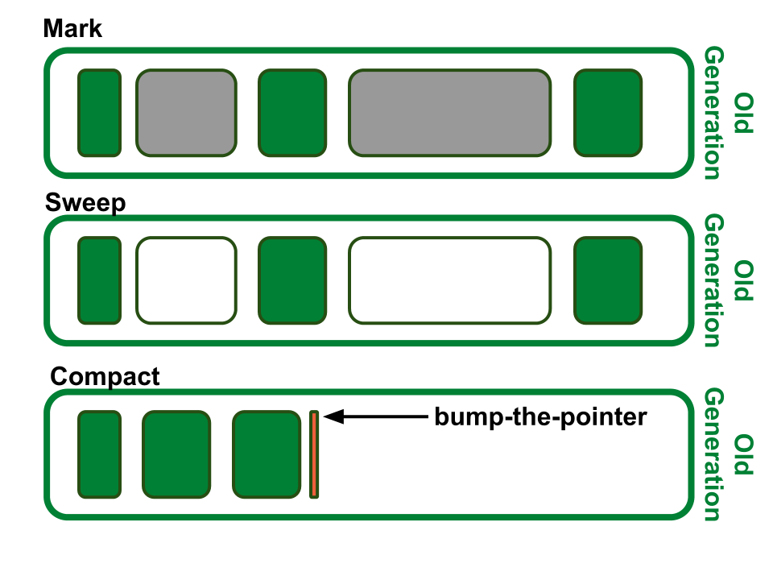
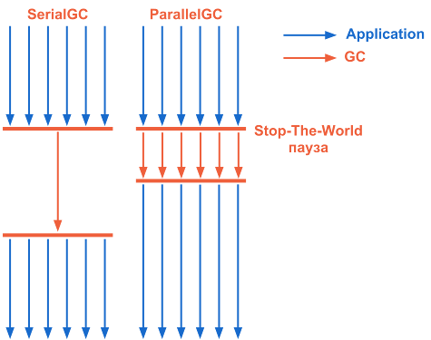

Your browser doesn't support the features required by impress.js, so you are presented with a simplified
version of this presentation.
For the best experience please use the latest Chrome, Safari or Firefox browser.
Garbage Collector
и управление памятью
в HotSpot JVM
SerialGC, FullGC (mark-sweep-compact)
SerialGC, FullGC (mark-sweep-compact)

SerialGC, FullGC (mark-sweep-compact)
В результате уплотнения
добавление нового объекта в OldGen происходит очень быстро (алгоритм bump-the-pointer)
SerialGC, выводы
Подходит для :
Приложений запущенных в client-mode
При размере Heap до 200 Mb
Недостатки:
Нет возможности использовать всю мощь многопроцессорности
Stop-the-world паузы могуть быть весьма ощутимы
ParallelGC
Особенности:
Использует те же алгоритмы, что и SerialGC
Может запускаться в нескольких потоках
Для сборки в OldGen имеет альтернативный алгоритм Parallel Compacting
По умолчанию включен в server-mode
Включение: -XX:+UseParallelGC
Включение Parallel Compacting: -XX:+UseParallelOldGC
Колличество потоков: -XX:ParallelGCThreads=<n>
SerialGC
vs
ParallelGC

Parallel Compacting Collector
Marking phase
Память разделяется на логические регионы
В отдельном потоке определяется размер живых объектов и сопоставляется региону
Summary phase
Изучение плотности регионов
Разделение регионов по плотности
Compact phase
Компановка только не плотных регионов
Parallel Compacting Collector
Parallel Compacting Collector оперирует регионами!
Рекомендован для использования при размере Heap более 4Gb
далее